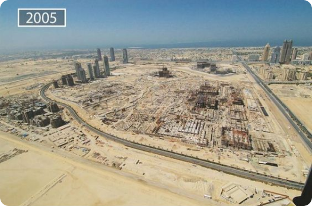
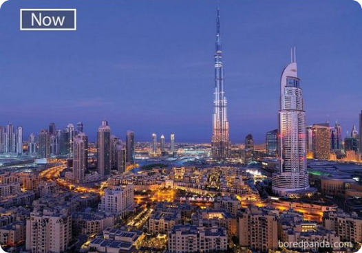

Definição
A urbanização envolve a expansão física das cidades, bem como mudanças na infraestrutura social e econômica das regiões afetadas
Crescimento territorial x populacional
Durante a urbanização, as áreas urbanas tendem a expandir seus limites geográficos à medida que mais terras são incorporadas para a construção de infraestrutura urbana, habitação, comércio, indústria e outras atividades. Isso pode acontecer por meio da expansão urbana horizontal, com o desenvolvimento de novos bairros e subúrbios, ou através da verticalização, com a construção de edifícios mais altos para acomodar uma população crescente em uma área limitada.
 Dubai, por exemplo, era uma pequena cidade portuária e centro comercial com uma economia baseada principalmente na pesca e no comércio de pérolas, entretanto a descoberta de petróleo em 1966 mudou drasticamente o panorama econômico e social de Dubai. A receita do petróleo permitiu investimentos significativos em infraestrutura, educação, saúde e outros setores, catalisando a transformação de Dubai em um centro global de negócios, turismo e inovação, aumentando suas barreiras territoriais.
Desenvolvimento da infraestrutura
A melhora da infraestrutura no espaço urbano também faz parte do processo de urbanização. Aspectos como transporte, abastecimento de água, saneamento básico, expansão e modernização de redes de energia elétrica e desenvolvimento de estrutura de telecomunicações, como redes de fibra ótica, torres de celular e internet de alta velocidade fazem parte do desenvolvimento da infraestrutura essencial. Enquanto isso, a modernização de hospitais e de serviços de saúde em geral, ampliamento da rede de ensino, desde o básico até o profissioanlizante e a manutenção de áreas verdes e áreas de recreção e lazer fazem parte do desenvolvimento da infrestrutura social.
Para tanto, o planejamento urbano é essencial para a construção organizada de uma região urbana para que todas essas necessidades e demandas sejam atendidas e para que toda a população disponha ao menos dos recursos infrestruturas básicos citados. No caso do Brasil, devido ao processo de industrialização acelerado, houve pouco planejamento acarretando em diversos outros problemas urbanos.